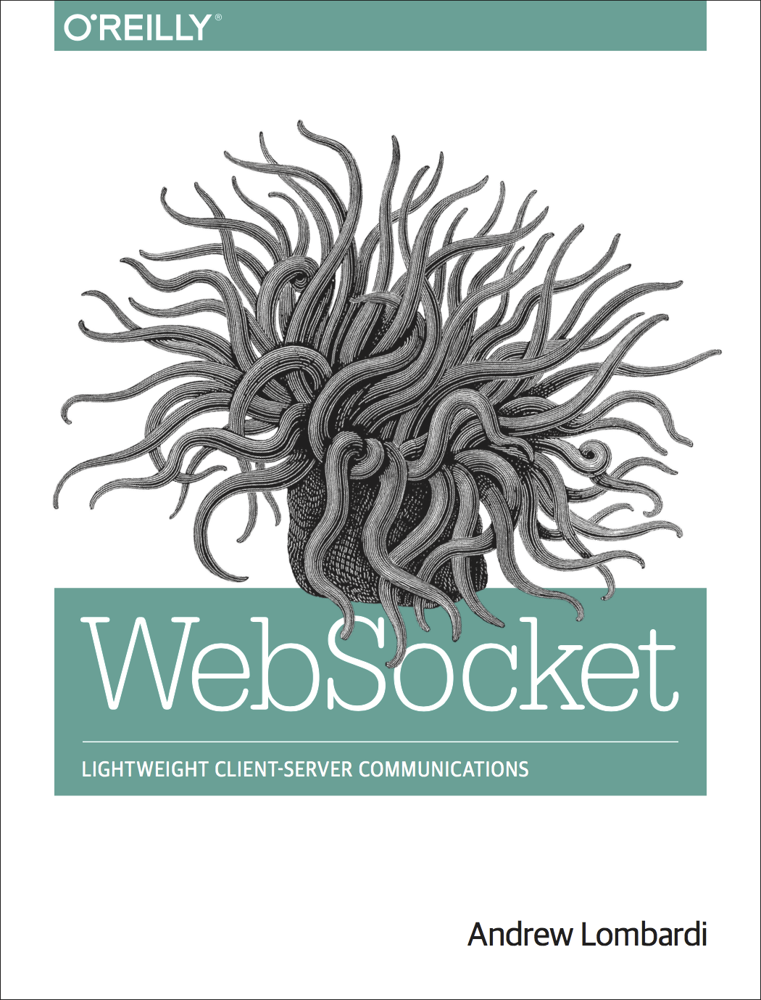

Code Your Infrastructure
with Terraform
About Me

About Me
17 Years in Business
9 Years @ Java2Days
Published Author
Software Consultants
Invented the Internet
To our success!

WebSocket Book
http://bit.ly/websocketbook
Key Points
Infrastructure makes sense as code
Define resources with code
Other thng that makes sense
Main Config
State
Providers
Modules
Backends
Backends
Describes how to load state in Terraform.
Backend Types
|
|
Local Backend
Default backend, not required unless specifying alternate path
terraform {
backend "local" {
path = "path/to/terraform.tfstate"
}
}
Alternate Backend
terraform {
backend "s3" {}
}
Where's the config though?
Config in File
./backend.tfvars
region = "us-east-1"
bucket = "unique-named-terraform-bucket"
key = "my-cool-server.tfstate"
Modules
Encapsulates common patterns for use in multiple projects
RDS Example
module "rdp_rds_instance" {
source = "github.com/terraform-community-modules/tf_aws_rds.git?ref=v1.0.1"
# RDS Instance Inputs
rds_instance_identifier = "${var.rds_instance_identifier}"
rds_allocated_storage = "${var.rds_allocated_storage}"
rds_engine_type = "${var.rds_engine_type}"
...
}
Fin
Q & A
Andrew Lombardi / @kinabalu
Mystic Coders, LLC